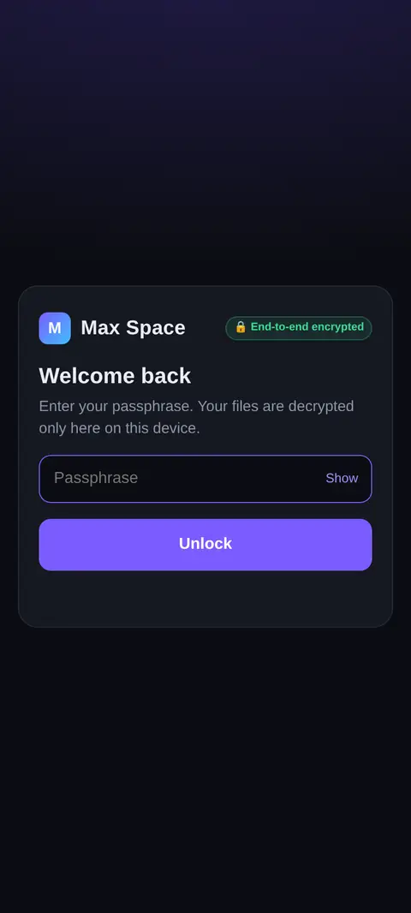

Dead LanguageLive
Speak, and hear it back in Sanskrit. Plus a lab for the Indus script, still unread after 4,000 years.


Portfolio 2026 · one take
I build worlds
you can walk into.
Scroll
Speak, and hear it back in Sanskrit. Plus a lab for the Indus script, still unread after 4,000 years.
Drag a whole city through time. Hyderabad in 3D, from 1990 to a 2040 forecast, in your hand.


Real photos of Earth, pulled out of weather-satellite radio and decoded line by line.


A private cloud drive. Files are encrypted on your device; the server only ever holds noise.


End of the take
Ideas, design and direction by Mani. Built fast, with AI as the crew.